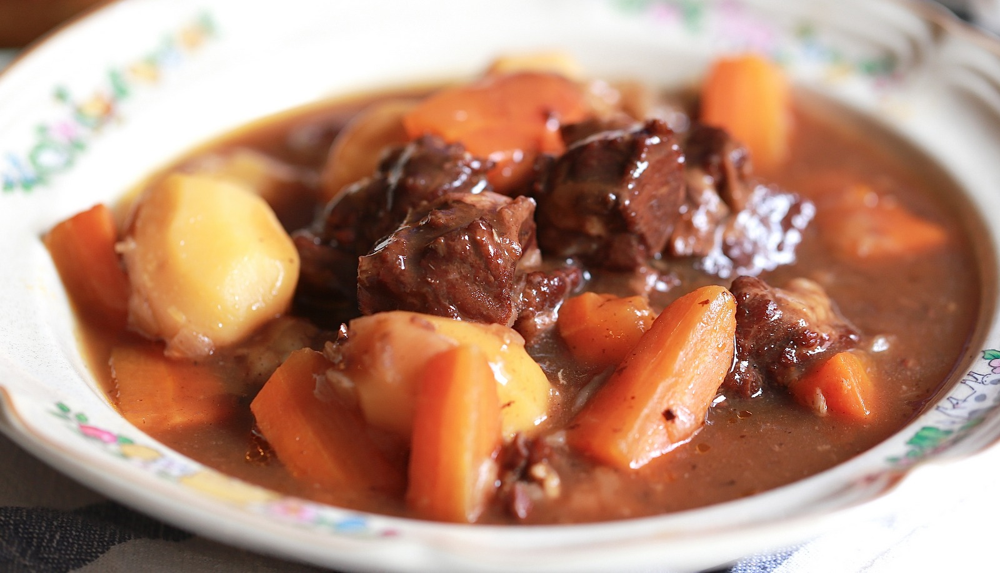

.jpg)
Bò hầm kiểu Pháp
Công thức
1 kg xương lợn- Cho xương vào nồi, đổ ngập nước thêm chút muối. Đun sôi rồi hạ lửa vừa, nấu liu riu độ 3 phút thì đổ nước đi, rửa lại thật sạch.
- Làm nóng lò nướng 220 độ C cả hai lửa trên và dưới
- Cho xương vào khay nướng có lót giấy bạc (để làm xong đỡ phải rửa khay mệt). Rưới 2 tbsp/ 2 thìa canh/ 30 ml dầu Olive lên, nướng 40 – 45 phút ở 200 độ C tới khi xương xém nâu.
- Trong lúc chờ nướng xương, gọt vỏ, cắt các loại rau này thành khúc lớn, dài 4 – 5 cm.
- Khi xương đã chuyển nâu, gắp xương cho vào nồi hầm. Chắt bớt mỡ trong khay nướng, để lại khoảng 30 ml (2 tbsp). Cho các loại rau vào, đảo đều rồi nướng khoảng 20 phút.
- Rửa sạch, xay nhuyễn cà chua. Có thể dùng cà chua đóng hộp cũng được.
- Rau củ nướng xong xếp vào nồi, thêm cà chua xay nhuyễn. Đổ nước lạnh cao hơn xương và rau khoảng 5 cm.
- Khi nước sôi hớt bớt bọt. Nếu có lá thơm kiẻu Ý (Italian mixed herbs, hỗn hợp gồm 5 – 6 loại lá thơm khác nhau, có bán trong các cửa hàng bán đồ nhập khẩu như An Nam Gourmet) thì nên cho vào nồi độ 1/2 tsp (1/2 thìa cafe). Hoặc có thể dùng lá Oregano, basil, thyme cho vào, sẽ rất thơm. Miễn đừng dùng quá nhiều tránh bị hắc quá là được. Hầm trong nồi áp suất khoảng 3 giờ.
Có nước dùng rồi thì nấu bò hầm rất đơn giản thôi:
-
Bước 1: Để lửa vừa, dùng chảo sâu lòng hoặc nồi gang đun chảy 1 tbsp/ 1 thìa/ 15 gram bơ (dùng bơ động vật, bơ ngon, ko nên dùng bơ thực vật). Cho 1 củ hành tây thái hạt lựu vào xào 5- 7 phút đến khi hành tây vàng nâu. Trút hành ra đĩa. Việc đảo tới khi hành vàng nâu và có ít cháy nâu ở đáy nồi thế kia sẽ giúp cho món ăn thơm ngon hơn nha, nên đừng dùng chảo chống dính để nấu ở bước này.
-
Bước 2: Cho vào chảo 2 – 3 tbsp (2-3 thìa hoặc 30 – 45 gram) bơ vào đun chảy. Cho 600 g thịt sườn bò thái khối to, cỡ 2 – 3 cm và 1/2 củ tỏi đập dập vào đảo tới khi thịt bò hết màu hồng, trút ra đĩa.
-
Bước 3: Cho 1 cup/ 240 ml vang đỏ vào nồi, đun sôi. Dùng thìa gỗ cạo hết các phần bám đen trong nồi, mấy cái muội đen này các chef bảo chính là “vàng” của nồi nước dùng đó, nên để cho nó vào nước rượu vang luôn.
-
Bước 4: Cho thịt bò, hành tây, tỏi vào nồi. Thêm 2 cups/ 480 ml nước dùng (chính là nước ninh xương rau củ ở trên) với 1 lá nguyệt quế (bay leaf). Đun sôi, hớt bọt nếu có. Nêm muối. Đậy vung ninh lửa vừa 30 phút.
-
Bước 5: Trong lúc ninh gọt vỏ 1 củ cà rốt (khoảng 120 g), thái khối. Gọt vỏ 300 g khoai tây. Cho cà rốt, khoai vào nồi áp suất. Đổ thịt bò vào, nêm lại gia vị cho vừa ăn, ninh thêm 15 – 20 phút đến khi thịt bò chín mềm nhừ. Việc ninh trong nồi áp suất sẽ giúp cho thịt bò, khoai tây, cà rốt mềm tan nhưng vẫn giữ được nguyên vẹn hình dáng, không bị vỡ vụn ra. Thịt và khoai, cà rốt ngấm nước dùng, mềm nhừ mà không bở hay bã, ngon lắm và đáng công làm lắm lắm ý!
Thịt bò hầm này khá nhiều nước. Sau khi thịt, khoai và cà rốt đã mềm nhừ, các bạn có thể dùng muôi vớt thịt với rau ra ngoài. Đun phần nước trong nồi trên lửa vừa. Pha bột ngô (corn starch) hoặc bột năng (tapioca starch), hay bột khoai (potato starch) theo tỉ lệ 2 tsp (2 thìa cafe) với nửa bát con nước (bát dùng ăn cơm). Vừa đổ hỗn hợp nước pha bột này vào nồi vừa quấy đều, khi nước sánh đặc như ý muốn thì dừng lại, Đổ lại thịt và khoai, cà rốt vào nồi. Bò hầm kiểu này dùng với bánh mì, cơm trắng hay trộn với spaghetti đều rất ngon.